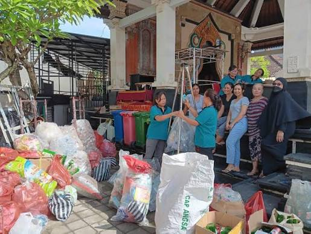
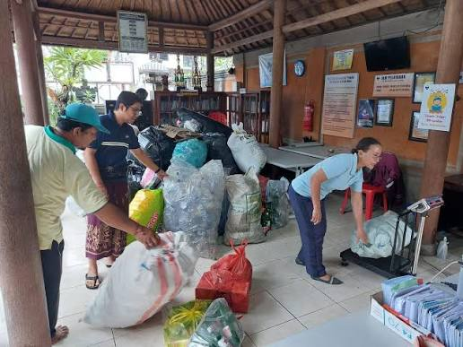
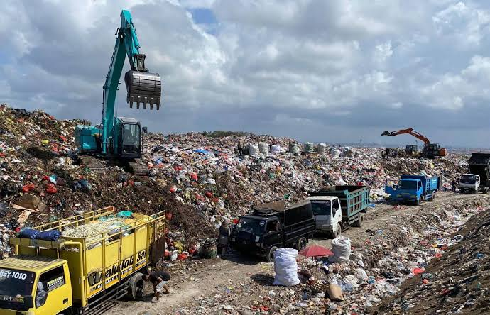

Peran Banjar Adat dalam Menggerakkan Digitalisasi Bank Sampah di Pedesaan
21 Maret 2026
Pulau Bali tidak hanya dikenal karena keindahan alam dan kekuatan budayanya, tetapi kini tengah menghadapi tantangan besar: krisis pengelolaan sampah di tingkat hulu. Dengan kapasitas Tempat Pembuangan Akhir (TPA) yang kian kritis, pola pikir konvensional "kumpul-angkut-buang" harus segera ditinggalkan. Di sinilah Banjar Adat, sebagai institusi sosial-tradisional paling kokoh di Bali, mengambil peran sentral. Melalui integrasi kearifan lokal dan platform Clean-Tech BaliEco Hub, digitalisasi bank sampah di pedesaan kini bukan lagi sekadar wacana, melainkan sebuah gerakan nyata yang terstruktur.
Hubungan Kultural: Awig-Awig dan Kelestarian Lingkungan
Secara turun-temurun, masyarakat Bali dipandu oleh filosofi Tri Hita Karana, khususnya
Palemahan—hubungan harmonis antara manusia dengan lingkungan alamnya. Ketika filosofi ini dituangkan
ke dalam aturan adat (Awig-Awig atau Pararem), dampaknya menjadi sangat mengikat.
Beberapa desa adat di Bali kini mulai menerapkan aturan tegas terkait pemilahan sampah dari rumah
tangga. Banjar Adat bertindak sebagai pusat komando sirkular. Setiap pertemuan rutin bulanan
(Sangkep), edukasi mengenai pemilahan sampah anorganik dan organik disisipkan sebagai agenda wajib.
Karakteristik Banjar yang berbasis komunitas erat membuat pengawasan sosial berjalan alami; memilah
sampah bukan lagi beban, melainkan bagian dari bakti sosial (ngayah) untuk kesucian desa.
Menyuntikkan Teknologi di Balai Banjar
Meskipun hukum adat memiliki pengaruh yang kuat, konsistensi di lapangan memerlukan sistem pencatatan yang transparan dan memudahkan warga. Di sinilah peran krusial fitur Drop Point Stations dari BaliEco Hub masuk ke dalam ekosistem pedesaan. Proses pengelolaannya dirancang sesederhana mungkin agar dapat dioperasikan oleh segala usia:

- Digitalisasi Timbangan: Setiap Banjar menunjuk kader lingkungan (biasanya dari Sekaa Teruna Teruni atau PKK) untuk menjadi operator stasiun setor. Sampah anorganik yang dibawa warga ditimbang menggunakan timbangan digital yang terintegrasi.
- Validasi Instan via QR Code: Warga desa cukup menunjukkan QR Code dari kartu fisik komunitas atau aplikasi BaliEco Hub di ponsel mereka untuk mencatat data berat sampah secara transparan.
- Konversi Menjadi Urusan Banjar: Poin yang dikumpulkan (Eco-Points) tidak hanya bisa dinikmati secara personal oleh warga, tetapi dalam beberapa kesepakatan adat, poin tersebut dapat didonasikan sebagian untuk kas banjar guna mendukung kegiatan upacara adat atau perbaikan fasilitas umum.
Dampak Nyata: Efisiensi 85% dan Pengurangan Beban TPA
Hasil kolaborasi ini sangat mencengangkan. Berdasarkan data pemantauan sistem, desa-desa di Bali yang mengintegrasikan manajemen sampah berbasis Banjar Adat dengan platform digital berhasil mencapai angka efisiensi pemilahan hingga 85%. Sampah plastik, kaleng, dan kertas mengalir rapi menuju industri daur ulang, sementara sampah organik dari sisa ritual adat (seperti janur dan bunga) berhasil ditahan di tingkat desa untuk dikelola menjadi pupuk kompos curah melalui fasilitas setempat. Pola ini secara drastis memutus rantai pembuangan liar ke sungai-sungai Bali dan menekan volume sampah yang berakhir di TPA regional secara signifikan.

Digitalisasi bank sampah pedesaan di Bali membuktikan bahwa modernisasi teknologi tidak harus menggerus nilai-nilai tradisional. Sebaliknya, ketika aplikasi digital seperti BaliEco Hub diletakkan di atas fondasi kultural Banjar Adat yang kuat, ia berubah menjadi akselerator perubahan perilaku yang masif. Langkah kecil memilah sampah dari Balai Banjar adalah kunci utama untuk mengembalikan senyuman dan keasrian sejati Pulau Dewata bagi generasi masa depan.